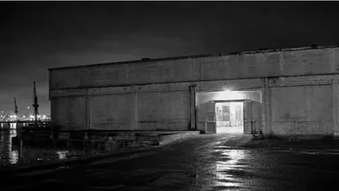
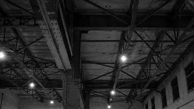
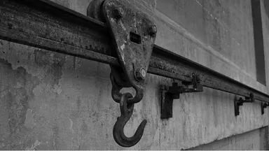

夕凪倉庫 2Fホール

港側から見た外観
2Fホールの梁
天井に残る搬入レール
1962年に建てられた冷蔵倉庫を、
2021年に改修した建物です。
一階は地元の食堂と工房、二階は展示やイベントに使われるホールになっています。ホールには当時の梁と、荷を運んでいた搬入レールがそのまま残されています。
当日はホールの照明を落とし、中央にランプをひとつだけ吊るします。暗さに目が慣れるまで、足元にお気をつけください。
- 会場
- 夕凪倉庫 2Fホール
- 所在地
- 〒424-0922静岡県静岡市清水区日の出町9-25
- 開催日時
- 2026.11.21.SAT16:30〜21:30（受付は21:00まで）
- 設備
- エレベーターあり・多目的トイレあり駐車場なし／駐輪スペースあり（約10台）
- お問い合わせ
- ながいゆうべ 事務局（よふかし舎）054-908-1121（平日 11:00〜18:00）※会場への直接のお問い合わせはご遠慮ください
会場までの道のり
-
電車でお越しの方
JR東海道本線「清水駅」みなと口から徒歩約15分。駅を出て港の方向へ進み、海沿いの道に出たら右へ。倉庫が並ぶ通りの三棟目です。
-
お車でお越しの方
会場に駐車場はありません。周辺のコインパーキングをご利用ください。ドリンクにお酒を用意しますので、できるだけ電車でのお越しをおすすめします。
-
入口の目印
正面のシャッターは閉めています。港側の搬入口、ランプがひとつ灯っている鉄の扉が入口です。階段かエレベーターで二階へお上がりください。
よくある質問
ひとりで参加しても大丈夫ですか？
もちろんです。これまでの参加者も、半分以上の方がおひとりでいらしています。受付で渡す名札に「いまつくっているもの」を書いておくと、それをきっかけに声がかかりやすくなります。
途中から来て、途中で帰ってもいいですか？
はい、入退場は自由です。受付は21:00まで開けています。再入場もできますので、近くで食事をしてから戻ってくることもできます。
つくる仕事をしていなくても参加できますか？
できます。これから始めたい方や、つくる人と一緒に働いている方、ただ話を聞いてみたい方も歓迎します。
当日の服装で気をつけることはありますか？
倉庫のホールは天井が高く、11月の夜はかなり冷えます。上着を一枚お持ちください。床は段差のあるコンクリートなので、歩きやすい靴をおすすめします。
お酒は出ますか？
ドリンクの中にお酒も用意しますが、20歳以上の方にのみお出しします。受付で年齢を確認できるものをご提示いただく場合があります。お車でお越しの方には出せませんので、ご了承ください。
荷物を預ける場所はありますか？
受付の横に簡単な荷物置き場を用意します。係の者が常にいるわけではないので、貴重品は身につけておいてください。
会場で写真を撮ってもいいですか？
会場の様子やトークの撮影は自由です。ただし、ほかの参加者の顔がはっきり写る写真をSNSなどに載せるときは、ご本人に一声かけてください。主催側でも記録の撮影を行います。
ここにないご質問は、お問い合わせからお気軽にどうぞ。